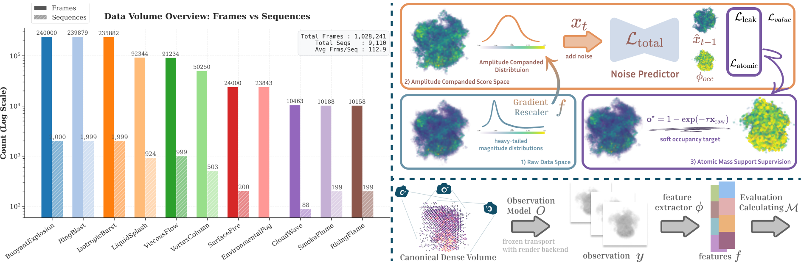
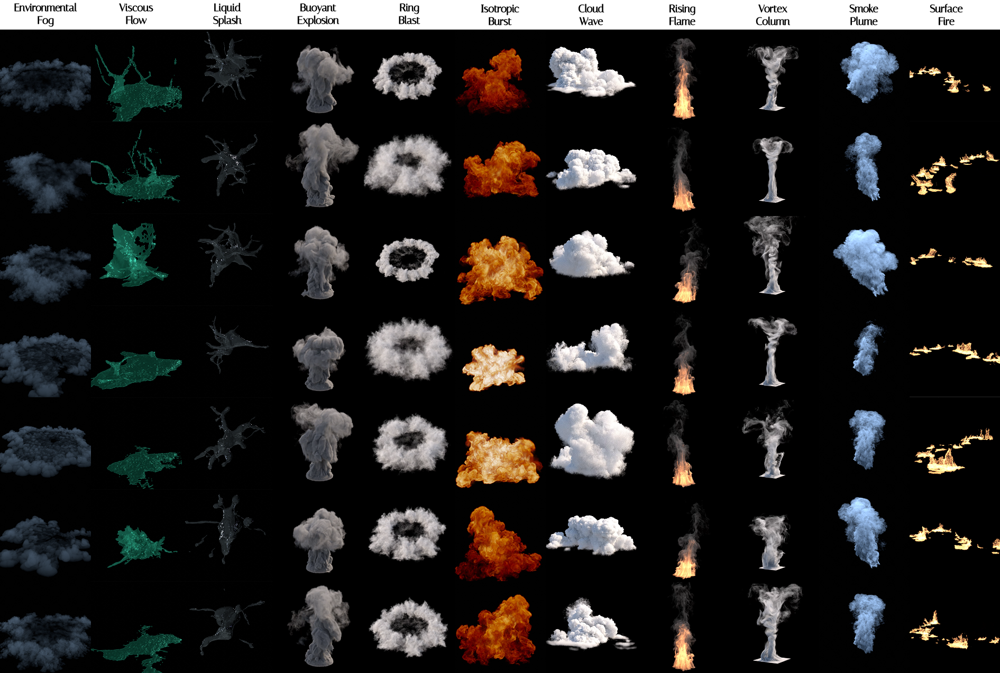
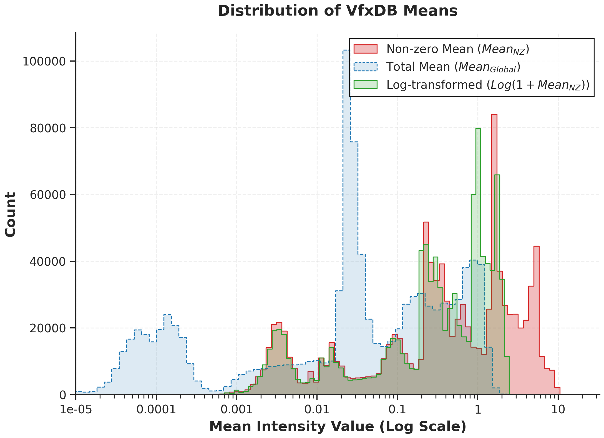
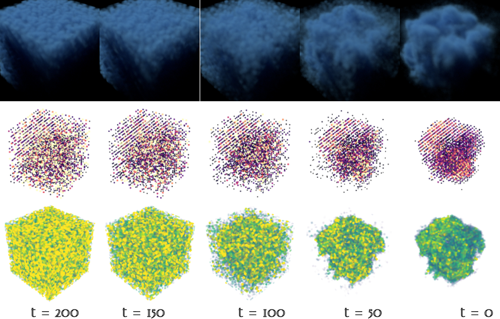

Abstract
Volumetric effects such as smoke, fire, dust, and explosions are central to Visual Effects (VFX) production and are commonly represented as sparse, high-resolution VDB/OpenVDB sequences with dynamic topology. Despite rapid progress in diffusion-based 3D generation, work on sparse volumetric sequences remains difficult to compare and reproduce, due to the lack of large-scale, well organized datasets and standardized evaluation protocols. In this paper, we introduce a 1-million-sample VFX sequence of VDB dataset with standardized preprocessing, consistent metadata, and protocol-ready splits, together with a reproducible benchmark suite for both static volume generation and sequence volumes generation. We further provide an end-to-end evaluation pipeline and a scalable diffusion training framework, enabled by our Atomic-Continuous prior, which addresses the distributional mismatch between vanilla diffusion models and the intrinsic sparsity of VDB data. Our release establishes a practical infrastructure for reproducible research and systematic progress tracking in sparse volumetric sequence generation.
Figures

Framework Overview. VfxDB brings together a large-scale VDB dataset, a standardized benchmark, and a VDB-native generative modeling framework.

Dataset Diversity. The dataset covers diverse VFX volume categories and remains visually consistent across common production rendering backends.

Value Distribution. Calibrated statistics highlight the sparse and heavy-tailed value distribution that makes VDB-native generation challenging.
